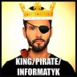

code for
freedom
on facebook
Mentors
Michał Wroczyński
Futurologist and entrepreneur, MD and cognitive-behavioral therapist, startup – coach, Founder of several technological start-ups (Fido Intelligence, Intermed, Medical Web Design). Currently CEO of Fido Labs based in Silicon Valley and Sopot – an independent AI Lab turned into a startup. Fido created a technology which allows understanding of the collective intelligence of internet users. Also passionate about mindfulness, jazz, anthropology, cognitive science and adrenaline sports.
TEDx Gdynia 2011
Arek Sołdon
Graphic designer and flash developer experienced in print design, web design and branding. Worked for several public & bussiness brands. Cooperates with Fundacja ePaństwo & Sourcefabric that shares technology, stories and experience to help address the challenges facing medias.
Vitaly Vlasov
Vitaly is a web developer, expert in social media, technology entrepreneur and opinion leader in Open Data and Open Government in Russia. Founder of Open Data Hackathon in St.Petersburg since 2012, local representative of CityCamp movement, co-founder of geolocation game platform Playcer, founder and chairman of Open City Foundation (ex Open and Future Web Foundation) in St.Petersburg. His mission is to connect modern technologies, citizen society, government to update our cities and change the way how they can communicate. Vitaly is also an evangelist, public speaker and totally interested in wikinomics, social networks, internet of things, smart cities and how technologies can change the world.

Krzysiek Madejski
Back-end developer and Code For Poland community coordinator at ePaństwo Foundation (ePF). He encourages the network of CfP volunteers to create social apps and convinces city officials to default to open and to collaborate with external developers. Chris worked as a developer on a number of topics including medical data visualizations, GIS systems, SOA integration and web-based startups. He has co-built logistics platform for a film education project reaching school pupils and he is active in an NGO advocating for regulation of advertising in public spaces.
Krzysiek Gontarek
Dad, entrepreneur, journalist, startups watcher, blogger, blader, TRI MA & fitness lover. Kris has 14 years experience in online journalism, developing internet-based projects, internet sale, online advertisement and managing remote teams. He is a co-founder & editor in chief of Dziennik Internautów @dziennik, co-founder of WebTango, interactive agency; GameTeller @game_teller (my son’s startup), a games recommendation tool; Kids On Bits @kidsonbits, the educational voluntary workshops for children on pitching, implementation of ideas and coding; founder of Go-Net and the main contributor to Poland StartupChart. Check more here: http://about.me/krisgontarek
Chris Worman
Director of Program Development at www.TechSoupGlobal.org . Chris began in community development, communications and fundraising for a variety of U.S.-based NGOs. Through TechSoup projects of Chris’ design (primarily the ReStart Challenges), more than 4 million citizens in Romania, Czech Republic and Slovakia, Serbia, Kosovo and Bosnia and Herzegovina have been exposed to an intensely local dialog about the role of the citizen in nominal democracies. More than fifty web or mobile sites for online to offline action have been generated. Chris tries to build global alliances for tech and social change and he does consulting on how to best accelerate web-based social leadership from beautiful ideas to usable apps. Chris is a trainer, facilitator, mentor, erstwhile writer, and consultant for organizations ranging from Microsoft, The Aspen Institute, National Democratic Institute and the Erste Bank to Transparency International and sits on the boards of several start-up social enterprises.
Mariusz Machuta-Rakowski
Code Monkey, geek, Person of the Year 2006 from the TIME magazine. Had the chance to work both at gray corporations and in the multicoloured gleam of social portals. Senior front-end web developer & R&D at ePaństwo Foundation that creates portals to make public data more accessible for citizens and foster open and transparent authorities as well as civil engagement.
Oleg Gant
Oleg is a creative and highly skilled media professional with 19 years’ experience as an international trainer, manager and journalist in TV, print, and online formats. He is an expert on online journalism, new media and transitioning media from a traditional to a digital format. Oleg has conducted dozens of training events for journalists in Russia, Ukraine and Central Asia. For the last years, Oleg has managed Internews’ Media Innovation and Development program in Central Asia (Kazakhstan, Kyrgyzstan, and Tajikistan). Olg is also the editor in chief of web portal http://te-st.ru
Alexey Sidorenko
Director of the Russia-focused project “Teplitsa of Social Technologies.” Alex is an expert on the Russian internet and an experienced web developer. His knowledge of the Russian new media and politics field includes web development, data analysis, regional political analysis, freedom of online speech issues, reporting, and editing. In 2009-2012, Dr. Sidorenko has been a reporter and an editor of the “RuNet Echo” project at Global Voices Online, where he researched and analyzed developments in the Russian internet sphere including ie. freedom of speech, information security and cyber warfare. Alex has also contributed to reports of Freedom House and Reporters Without Borders. In 2010, he served as the web developer behind the “Help Map” project, an award-winning crowdsourcing initiative to help the victims of the summer wildfires. Speaks Polish, English and Russian.
Michał “rysiek” Woźniak
Human rights in digital era hacktivist, Free Software advocate, privacy and anonimity evangelist; president of the Board of the Polish Free and Open Source Software Foundation (FWIOO); expert volunteer to the Panoptykon Foundation; member of the Council for Digitization, a multistakeholder advisory body to
the Polish Minister of Administration and Digital Affairs, co-organizer of SocHack social hackathons; charter member of the Warsaw Hackerspace; Telecomix co-operator; biker and sailor.
Magda Siwanowicz
Works as a legal analyst in ePaństwo Foundation on various issues where law and new technologies are crossing each other. Magda is a member of the Open Data Team of the City of Gdańsk that enforces the Open Data Policy of the City of Gdańsk. She is also a legal advisor trainee from the Warsaw Chamber of the Legal Counsel.
Daniel Macyszyn
Lab Director, founder and CEO at the ePaństwo Foundation that creates open data portals and popularizes ideas of government transparency, civic society and citizens supervision over authorities. Daniel is a developer. He was twice awarded the EPSIPlatform Trailblazer Award by European Public Sector Information Platform for Sejmometr (2012 & 2013).
Alicja Peszkowska
Social innovator interested in how #tech translates into social reality. A voice of @communityboostr and an active fan of #opendata; activist, singer, culture lover and a believer in collectivism. Alicja coordinates NetWtorek meet-ups in Warsaw and was co-responsible for SocHack social hakathons. She works as a community builder for international projects at TechSoup Foundation.